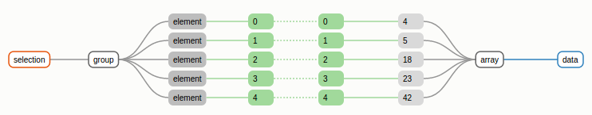

El mundo actual está lleno de datos, datos que requieren ser mostrados de la mejor manera posible, la cual muchas veces se logra condensando la información en gráficos. Para lograr esto existen diversidad de herramientas que dependerán según el objetivo que se quiere lograr.
Todo comienza con una pregunta, las aplicaciones prácticas de la ciencia de datos se basan en las siguientes etapas.
- Tener una hipótesis u objetivo, una pregunta que se desea responder.
- Obtener los datos necesarios para responderla
- Examinar los datos
- Establecer un modelo que permita obtener respuestas
- Construir gráficos que permitan observar los resultados
🎊 🎉 ¡¡¡Gracias a Blanca!!! 🎊 🎉
Siganla en sus redes
Amonos con D3!!!
Seleccionando un elemento del DOM y cambiando propiedades (.attr(), .style())
#example1
Parrafo 1
Parrafo 2
Estableciendo propiedades dinámicas sobre un elemento del DOM
#example2
Parrafo 1
Parrafo 2
Ejercicio1
- Selecciona los div y cambia su color de fondo (background)
- Selecciona el primer div y cambia el color de fuente (color)
- Selecciona el segundo div y aplicale la clase "circle"
Enlazando datos con los elementos (.data()) el cora ❣️ de D3

#example3
Parrafo 1
Parrafo 2
Update, enter, exit
https://bost.ocks.org/mike/selection/#enter-update-exit
Update
Resultado de los elementos del DOM que hagan match con los datos
Enter
Resultado de los datos que no tienen un elemento en el DOM
Exit
Resultado de los elementos del DOM que no tienen un dato asignado
Actualizando los datos
#example4
Parrafo 1
Parrafo 2
Parrafo A
Parrafo B
Parrafo C
Parrafo D
Ejercicio2
- Crea un div por cada elemento del arreglo dado usando la subseleccion .enter()
- Aplica a los divs la clase "square" o "circle" para que sean visibles
#exercise2
Graficando datos
Cuando los elementos y los datos toman sentido
#example5
Ejercicio 3
Retomando el ejercicio de la sección anterior.
Ahora van a tener que recrear con los mismos datos divs, les tienen que pasar la clase circle y su ancho y alto deben ser el valor del dato
#exercise3
Nuestra primer grafiquilla
Ya con datos y toda la cosa
#chart-bar
¿ Alguién dijo CSV ?
Ya con datos y toda la cosa
#chart-bar con CSV